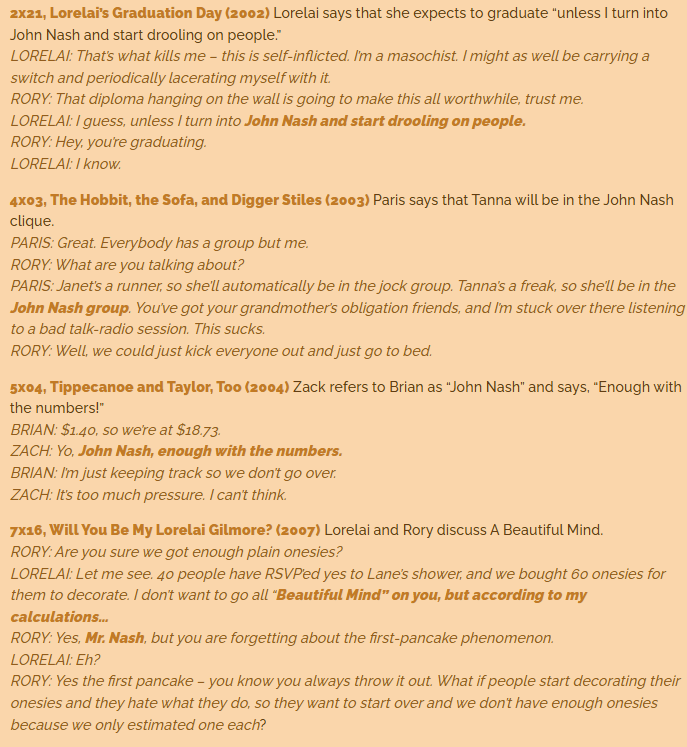

Plot
In 1947, John Nash arrives at Princeton University as a co-recipient, with Martin Hansen, of the Carnegie Scholarship for Mathematics. He meets fellow math and science graduate students Sol, Ainsley, and Bender, as well as his roommate Charles Herman, a literature student. Determined to publish his original idea, Nash is inspired when he and his classmates discuss how to approach a group of women at a bar. Nash argues that a cooperative approach would lead to better chances of success, which leads him to develop a new concept of governing dynamics. His theory earns him an appointment at MIT where he chooses Sol and Bender over Hansen to join him. In 1953, Nash is invited to the Pentagon to decipher encrypted enemy telecommunications. Bored with his work at MIT, he is recruited by the mysterious William Parcher of the United States Department of Defense with a classified assignment: to identify hidden patterns in magazines and newspapers to thwart a Soviet plot. He is given an implanted diode that gives him a passcode to access a drop spot at a mansion. Nash becomes increasingly obsessive with his work and grows paranoid. Nash falls in love with a student, Alicia Larde, and they eventually marry. After a shootout between Parcher and Soviet agents, Nash tries to quit his assignment but is forced to continue. While delivering a guest lecture at Harvard University, Nash believes he's being pursued by Soviet agents and is forcibly sedated. He awakens to a psychiatric facility under the care of Dr. Rosen. Dr. Rosen tells Alicia that Nash has schizophrenia and that Charles, Marcee, and Parcher exist only in his imagination. Alicia, Sol and Bender investigate her husband's study, which shows various news and magazine clippings. Alicia uncovers the stack of unopened "classified documents" from the drop point and brings them to Nash, revealing the truth of his assignment. Overcome with shock, Nash slices his arm open to uncover the diode, which doesn't exist. Nash is given a course of insulin shock therapy and eventually released. Frustrated with the side effects of his antipsychotic medication, he secretly stops taking it and starts encountering Parcher, who urges him to continue his assignment in a shed near his home. In 1956, Alicia discovers Nash has relapsed and rushes home. She finds that Nash had left their infant son in the running bathtub, convinced "Charles" was watching the baby. Alicia calls Dr. Rosen, but Nash accidentally hits her and the baby, believing he's saving them from Parcher. As Alicia flees with the baby, Nash realizes that all of them have looked the same ever since he first encountered them, and concludes they must be hallucinations. Against Dr. Rosen's advice, Nash chooses not to be hospitalized again, believing he can deal with his symptoms himself with Alicia's support. Nash returns to Princeton, approaching his old rival Hansen, now head of the mathematics department, who allows him to work out of the library and audit classes. Over the next two decades, Nash learns to ignore his hallucinations and, by the late 1970s, is allowed to teach again. In 1994, Nash is awarded the Nobel Memorial Prize in Economic Sciences for his work on game theory and is honored by his fellow professors. At the ceremony in Stockholm, he dedicates the prize to his wife. Nash reencounters Charles, Marcee, and Parcher after the ceremony, but ignores them as he, Alicia, and their son leave.Mijn mening
Gilmore Girls references
